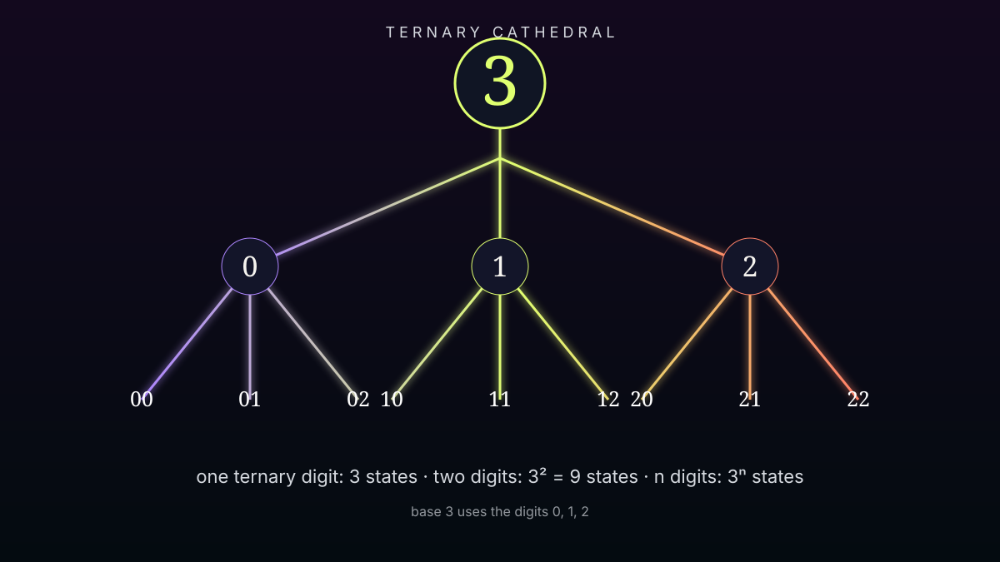

Think
in threes.
Six working machines expose the arithmetic and geometry of 3: grouping, divisibility, exponential growth, ternary notation, complex roots, and triangle construction.

The Triplet Grouper
Choose a count and watch it divide into groups of three. The remainder must be 0, 1, or 2—the three residue classes modulo 3.
The Digit-Sum Gate
A decimal integer is divisible by 3 exactly when the sum of its digits is divisible by 3. Try something enormous—the test does not require converting it to a JavaScript number.
The Power Tripler
Each step multiplies the previous state count by 3. This is the growth law behind strings of ternary digits.
The Ternary Translator
Translate an integer into ordinary base 3 and balanced ternary. Balanced ternary uses the digit values −1, 0, +1.
The 120° Turntable
Select one of the three cube roots of unity. Their arguments are separated by 120°, placing them at the vertices of an equilateral triangle.
The Triangle Gate
Three positive lengths form a nondegenerate triangle only when each pair sums to more than the remaining side. When valid, the machine computes area with Heron's formula.
Three museum doors are now open on an unbounded number line. Gallery 003 ends here; the atlas does not.
Return to the number atlas →